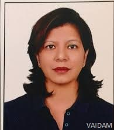

Dr. Leena Sharma
QUALIFICATIONS
Consultant , BDS, 23 years of experience
ABOUT DOCTOR
Dr. Leena Sharma is an eminent Dentist and she has an experience of more than 23 years.
She has expertise in the treatment of Smile Design, Dental Checkup (General), Dental Examinations, Crowns and Bridges Fixing, Scaling / Polishing, Surgical Tooth Extraction, Dental Ceramics, Dental Services, Straightening Teeth (Conventional Braces), Full Denture (Acrylic, and Cosmetic Gum Treatment.
Dr. Sharma has a professional membership association with the Dental Council of India, Indian Dental Association, and The Academy of Oral Implantology.
She also has command the treatment of Teeth Whitening (Take-Home Kit), Teeth Scaling & Polishing, Crowns & Bridges Fixing, and Aesthetic Dentistry.
SPECIALIZATION :
Cosmetic & Aesthetic Dentistry,
Smile Design,
Dental Checkup (General),
Dental Examinations,
Crowns and Bridges Fixing,
Scaling / Polishing,
Surgical Tooth Extraction,
Dental Ceramics,
Dental Services,
Straightening Teeth (Conventional Braces),
Full Denture (Acrylic),
Cosmetic Gum Treatment,
Teeth Whitening (Take-Home Kit),
Teeth Scaling & Polishing,
Crowns & Bridges Fixing.
WORK EXPERIENCE
Consultant, Manipal Hospitals Dwarka, Delhi